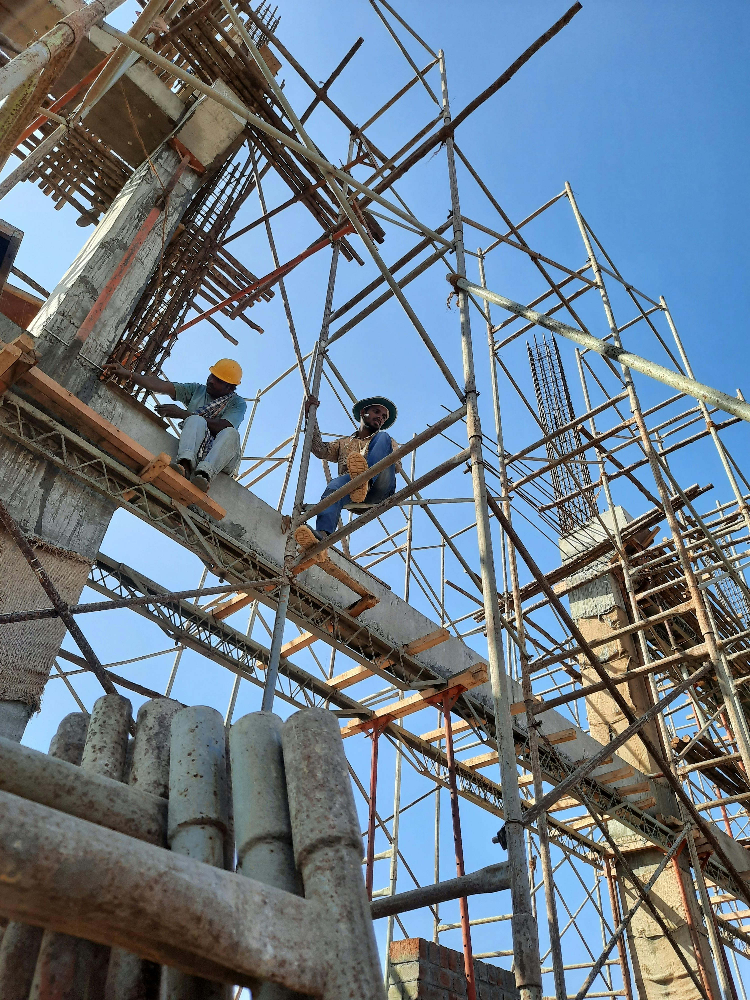
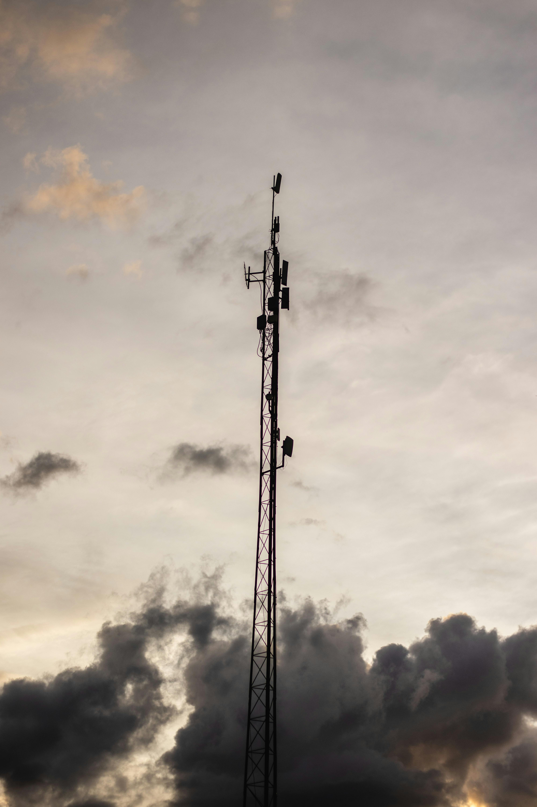
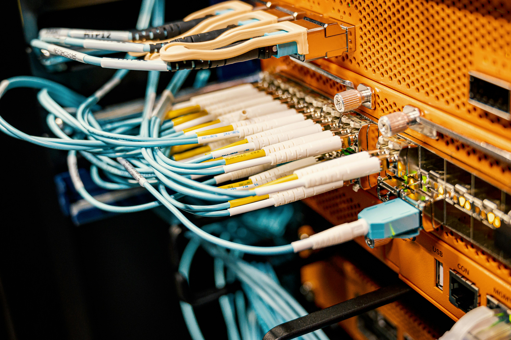

Backbone metropolitain
Deploiement de 42 km de fibre urbaine avec recette complete et transfert d'exploitation.
- Disponibilite cible atteinte a 99.9%
- Mise en service dans le delai contractuel
Nos references
Nous livrons des infrastructures operationnelles, securisees et documentees, dans des environnements techniques exigeants.
Projets
Chaque projet est conduit avec des objectifs de qualite, delai et performance reseau.
Deploiement de 42 km de fibre urbaine avec recette complete et transfert d'exploitation.
Maintenance preventive/corrective sur plusieurs noeuds critiques avec equipe dediee.
Construction et equipement de pylones telecom en zone periurbaine et rurale.
Creation de chambres, conduites et plateformes techniques pour deploiement FTTH.
Analyse des pertes, correction des points critiques et optimisation des liaisons.
Execution progressive avec reporting hebdomadaire et gouvernance projet partagee.
Galerie
Quelques images de nos interventions telecom et genie civil.



Parlons de vos enjeux reseau et de vos contraintes terrain. Nous definissons avec vous un plan de realisation clair et mesurable.
Demarrer votre projet